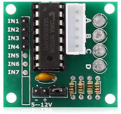
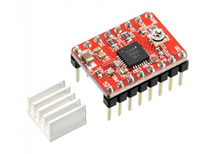

Scegli il modello del tuo driver
Esistono fondamentalmente 2 modelli di driver per motore passo passo che sono caratterizzati dalla differenza di attuazione dei gpio del tuo Raspberry.
Clicca sull'immagine correspondente al tuo motore per andare alla pagina di gestione della tua slitta.
Driver modello UNL2003:

Driver modello A4988:
